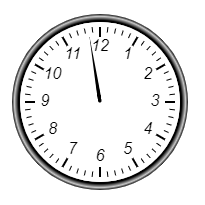

Главная → Таймер с индиктором прогресса в виде циферблата со стрелкой
Таймер – элемент управления, выдающий определённый сигнал через заданный промежуток времени (рис. 1).

Рис. 1 - Таймер с индиктором прогресса в виде циферблата со стрелкой
Объект SegmentGaugeTimer наследуется от объекта SegmentGauge.
Для создания объекта типа SegmentGaugeTimer необходимо подключить следующие скрипты:
Для создания объекта в функцию-конструктор передаются основные параметры:
id - идентификатор таймера в виде текстовой строки.
context - контекст типа CanvasRenderingContext2D для отрисовки таймера.
cx - координата X центра базового сегмента таймера.
cy - координата Y центра базового сегмента таймера.
r_in - внутренний радиус базового сегмента таймера.
thickness - толщина базового сегмента таймера.
init_angle - начальный угол базового сегмента таймера в градусах. Может принимать отрицательные значения. angle - угол базового сегмента таймера в градусах.
Внешний радиус базового сегмента таймера r_out будет рассчитан автоматически в процессе создания объекта.
Примеры использования различных свойств и методов объекта.
Объект SegmentGaugeTimer наследует свойства объекта SegmentGauge и обладает собственнными свойствами:
on_pause_text - текстовая надпись в режиме паузы.
on_pause_font - шрифт текста в режиме паузы.
Объект SegmentGaugeTimer наследует флаги объекта SegmentGauge и обладает собственнными флагами:
on_pause - режим паузы. Значение true передается для установки режима паузы, значение false - для снятия режима паузы.
build() - выполняет основные вычисления формы и внешнего вида объекта с учетом заданных свойств и флагов. Этот метод необходимо вызывать после изменения свойств объекта, чтобы они вступили в силу.
draw() - функция отрисовки таймера.
instanceCopy() - создание независимой копии объекта.
countdown(new_value, value, delay) - функция обратного отсчета от значения value до значения new_value с задержкой delay.
start() - запуск таймера для начала обратного отсчета или продолжения отсчета после паузы.
pause() - установка режима паузы.
stop() - остановка и сброс таймера.
События, запускаемые объектом SegmentGaugeTimer, реализованы с помощью CustomEvent.
В поле detail.timer передается ссылка на сам объект.
segment-gauge-timer-changed - состояние объекта изменено.
segment-gauge-timer-is-up - сигнал о завершении указанного периода времени.
Главная → Таймер с индиктором прогресса в виде циферблата со стрелкой